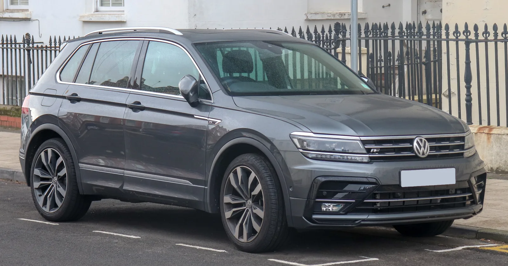
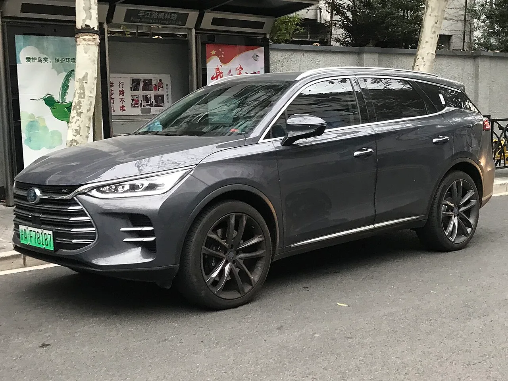
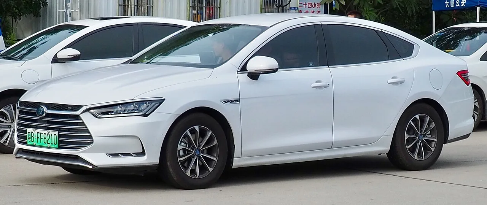
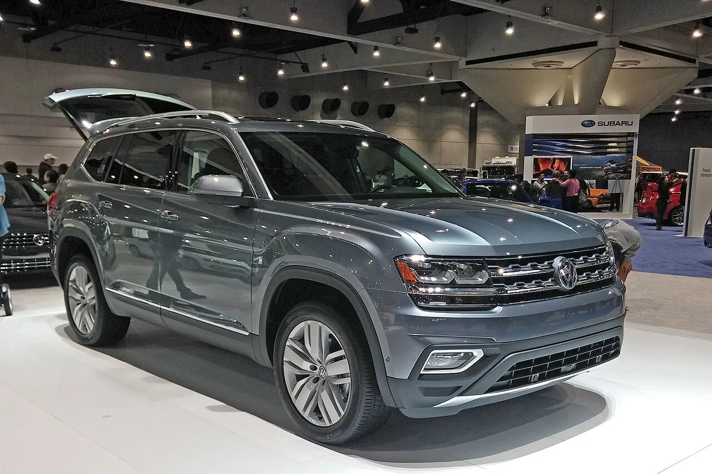
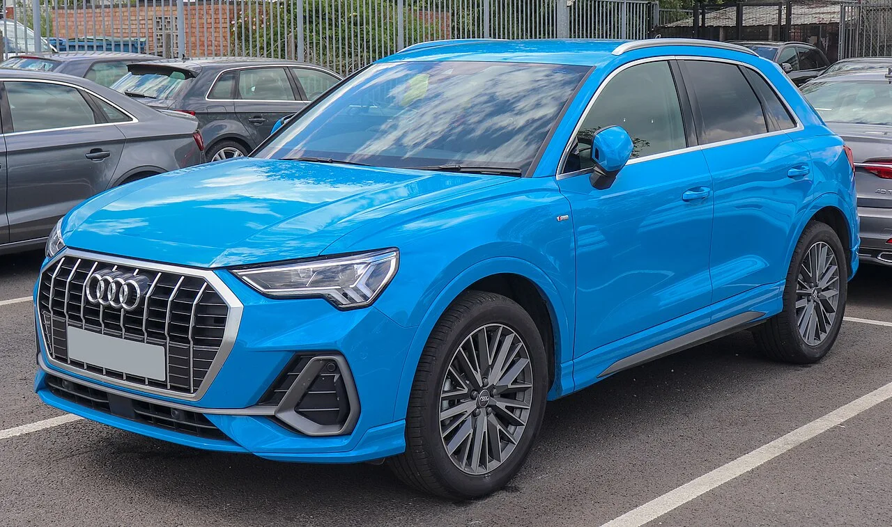

▲ 폭스바겐은 2018년식 티구안 등 20만 8,724대를 조향 랙 장착 볼트 부식 결함으로 미국에서 리콜한다 ⓒ Vauxford, Wikimedia Commons (CC BY-SA 4.0)
브레이크를 밟지 않았는데 브레이크등이 계속 켜져 있거나, 스티어링 휠을 돌려도 바퀴가 말을 듣지 않는다면? 실제로 이런 위험을 안고 도로를 달리고 있던 차량이 39만여 대에 달했다.
중국 BYD와 독일 폭스바겐그룹이 비슷한 시기에 각각 대규모 리콜을 발표했다. BYD는 중국 시장에서 탕(Tang)·친(Qin) 시리즈 총 18만 3,211대를 브레이크 페달 결함으로, 폭스바겐은 미국 시장에서 티구안·아틀라스·아우디 Q3 등 20만 8,724대를 조향장치 결함으로 리콜한다. 두 회사를 합치면 39만 1,935대, 공교롭게도 안전과 직결되는 핵심 부품(제동·조향) 결함이 같은 시기에 겹친 셈이다.
1. BYD, 탕·친 18만 3,211대 리콜 — 브레이크등이 꺼지지 않는다
BYD는 중국 국가시장감독관리총국(SAMR)에 2014년부터 2022년 사이 생산된 탕·친 시리즈 차량에 대한 리콜 계획을 신고했다. 리콜 대상은 탕 시리즈 14만 2,895대, 친 시리즈 4만 316대(2014년 6월 27일~2019년 6월 9일 생산분)로, 총 18만 3,211대에 달한다.
| 모델 | 리콜 대수 | 생산 기간 |
|---|---|---|
| 탕(Tang) 시리즈 | 142,895대 | 2014~2022년 |
| 친(Qin) 시리즈 | 40,316대 | 2014.6.27~2019.6.9 |
| 합계 | 183,211대 | - |
결함의 원인은 브레이크 페달 스토퍼 패드의 재질 문제다. 스토퍼 패드는 브레이크 페달이 밟히지 않은 상태에서 페달 위치를 고정하고 브레이크등 스위치를 눌러주지 않도록 지지하는 역할을 하는데, 장기간 사용하면 재질 결함으로 균열이 생기거나 파손될 수 있다. 극단적인 경우 이 부품이 아예 떨어져 나가면, 페달을 밟지 않았는데도 브레이크등이 계속 켜진 상태로 유지돼 뒤따르는 차량 운전자에게 잘못된 제동 신호를 전달할 수 있다. 이는 후행 차량의 오판을 유발해 추돌 등 2차 사고 위험으로 이어질 수 있는 문제다.

▲ BYD 탕(Tang). 이번 리콜에서 가장 많은 14만 2,895대가 포함된 모델이다 ⓒ Jengtingchen, Wikimedia Commons (CC BY-SA 4.0)
BYD는 리콜 대상 차량에 대해 인증 딜러를 통해 개선된 부품으로 스토퍼 패드를 무상 교체하겠다고 밝혔다. 이번 리콜은 BYD가 최근 몇 달 새 중국 내수 시장에서 발표한 대규모 품질 이슈 중 하나로, 관련 소식은 아래에서 확인할 수 있다. 관련 보도 바로가기

▲ BYD 친(Qin). 2014년 6월부터 2019년 6월 사이 생산된 4만 316대가 이번 리콜에 포함됐다 ⓒ User3204, Wikimedia Commons (CC BY-SA 4.0)
2. 폭스바겐·아우디, 20만 8,724대 리콜 — 조향 랙 볼트가 부식돼 끊어진다
미국에서는 폭스바겐그룹이 별도의 리콜을 진행한다. 미국 도로교통안전국(NHTSA)에 따르면 리콜 대상은 2018년식 티구안, 2018~2019년식 아틀라스, 2019~2021년식 아우디 Q3로, 세 차종을 합쳐 총 20만 8,724대에 이른다.
| 모델 | 연식 |
|---|---|
| 폭스바겐 티구안 | 2018년식 |
| 폭스바겐 아틀라스 | 2018~2019년식 |
| 아우디 Q3 | 2019~2021년식 |
※ 3개 차종 합산 리콜 대수 208,724대
결함 원인은 조향 랙(스티어링 랙)을 차체에 고정하는 장착 볼트의 부식이다. NHTSA는 해당 볼트, 특히 오른쪽 조향 랙 장착 볼트가 시간이 지나며 부식돼 결국 파손될 수 있다고 설명했다. 이 볼트가 손상되면 조향 랙 자체가 헐거워지거나 고정력을 잃어 조향 제어력을 상실할 수 있으며, 이는 주행 중 충돌 위험을 크게 높이는 중대 결함으로 분류된다.
✅ 폭스바겐·아우디 리콜, 이것만은 확인하자
· 대상 차종: 2018년식 티구안, 2018~2019년식 아틀라스, 2019~2021년식 아우디 Q3
· 결함 부위: 오른쪽 조향 랙 장착 볼트(부식으로 인한 파손 가능성)
· 위험성: 조향 제어력 상실에 따른 충돌 위험 증가
· 조치: 딜러를 통해 오른쪽 조향 랙 장착 볼트 무상 교체

▲ 폭스바겐 아틀라스. 2018~2019년식 모델이 이번 조향 랙 볼트 리콜 대상에 포함됐다 ⓒ Wikimedia Commons (CC BY-SA 3.0)

▲ 아우디 Q3. 2019~2021년식 모델이 같은 조향 랙 볼트 결함으로 함께 리콜된다 ⓒ Vauxford, Wikimedia Commons (CC BY-SA 4.0)
NHTSA의 리콜 세부 내용과 폭스바겐 측 공식 대응은 아래 보도에서 확인할 수 있다. 관련 보도 바로가기
3. 두 리콜, 뭐가 다르고 뭐가 같나
BYD와 폭스바겐의 리콜은 발생 지역·차종·결함 부위가 모두 다른 별개의 사안이다. 다만 공교롭게도 비슷한 시기에 나란히 발표되면서, 최근 완성차 업계 전반의 품질 관리 이슈로 함께 주목받고 있다. 두 리콜을 나란히 비교하면 다음과 같다.
| 구분 | BYD | 폭스바겐·아우디 |
|---|---|---|
| 리콜 지역 | 중국 | 미국 |
| 감독 기관 | 국가시장감독관리총국(SAMR) | 도로교통안전국(NHTSA) |
| 대상 차종 | 탕, 친 시리즈 | 티구안, 아틀라스, 아우디 Q3 |
| 리콜 대수 | 183,211대 | 208,724대 |
| 결함 부위 | 브레이크 페달 스토퍼 패드 | 조향 랙 장착 볼트 |
| 결함 원인 | 재질 결함(균열·파손) | 부식(파손) |
| 위험 시나리오 | 브레이크등 오작동으로 후행 차량 오판 유발 | 조향 제어력 상실 |
| 조치 | 부품 무상 교체 | 볼트 무상 교체 |
📍 두 리콜 모두 아직 국내(한국) 판매 차종과는 무관하다
이번에 리콜 대상이 된 BYD 탕·친 구형 모델과 폭스바겐 2018~2019년식 티구안·아틀라스, 2019~2021년식 아우디 Q3는 이번 리콜 발표 시점 기준으로 각각 중국·미국 판매분에 한정된 조치다. 국내 소비자라면 본인 차량이 해당 리콜 범위에 포함되는지, 제조사 공식 채널이나 국토교통부 리콜 정보포털을 통해 별도로 확인하는 것이 안전하다.
4. 왜 주목해야 하나 — 안전 관련 리콜이 늘어나는 이유
브레이크와 조향장치는 자동차의 가장 기본적인 안전 시스템이다. 두 부품 모두 결함이 발생했을 때 운전자가 즉각적으로 인지하기 어렵다는 공통점이 있다. BYD의 브레이크등 결함은 외견상 눈에 잘 띄지 않고, 폭스바겐의 조향 랙 볼트 부식 역시 겉으로 드러나지 않다가 갑작스러운 고장으로 이어질 수 있다. 그만큼 제조사의 선제적 리콜과 소비자의 신속한 조치가 중요하다.
최근 몇 년 사이 전 세계 완성차 업계에서는 전동화 전환과 생산량 확대가 동시에 진행되며 대규모 리콜 사례가 이어지고 있다. BYD는 중국 내수 판매 1위 업체로 성장하며 누적 생산·판매 대수가 급증했고, 폭스바겐그룹 역시 북미 시장에서 SUV 라인업 판매를 크게 늘려온 만큼, 이번처럼 수십만 대 단위의 리콜이 나올 때마다 파장이 커질 수밖에 없는 구조다.
✅ 리콜 대상 차주라면 이렇게 대응하자
· BYD 탕·친(중국 판매분) 차주: BYD 공식 서비스센터를 통해 브레이크 페달 스토퍼 패드 무상 교체 여부 확인
· 폭스바겐 티구안·아틀라스, 아우디 Q3(미국 판매분) 차주: 폭스바겐·아우디 딜러망을 통해 조향 랙 장착 볼트 무상 교체 서비스 캠페인 안내 확인
· 브레이크등이 상시 점등되거나 조향 시 이질감이 느껴진다면 정비소 방문 전까지 저속·단거리 주행만 권장
5. 요약
BYD와 폭스바겐이 비슷한 시기에 각각 대규모 리콜을 발표했다. BYD는 중국에서 탕·친 시리즈 18만 3,211대를 브레이크 페달 스토퍼 패드 재질 결함으로, 폭스바겐그룹은 미국에서 티구안·아틀라스·아우디 Q3 20만 8,724대를 조향 랙 장착 볼트 부식 결함으로 리콜한다. 두 회사를 합치면 리콜 대수는 39만 1,935대에 달한다.
두 리콜은 지역과 차종, 결함 부위가 서로 무관한 별개 사안이지만 공통적으로 제동·조향이라는 핵심 안전장치와 직결된다는 점에서 주목할 만하다. BYD는 브레이크등 오작동으로 인한 후행 차량 오판 가능성을, 폭스바겐은 조향 제어력 상실 가능성을 각각 리콜 사유로 들었다. 두 회사 모두 딜러망을 통해 해당 부품을 무상 교체하기로 했으며, 해당 차종 소유자는 제조사 공식 채널을 통해 리콜 대상 여부를 확인하는 것이 좋다.